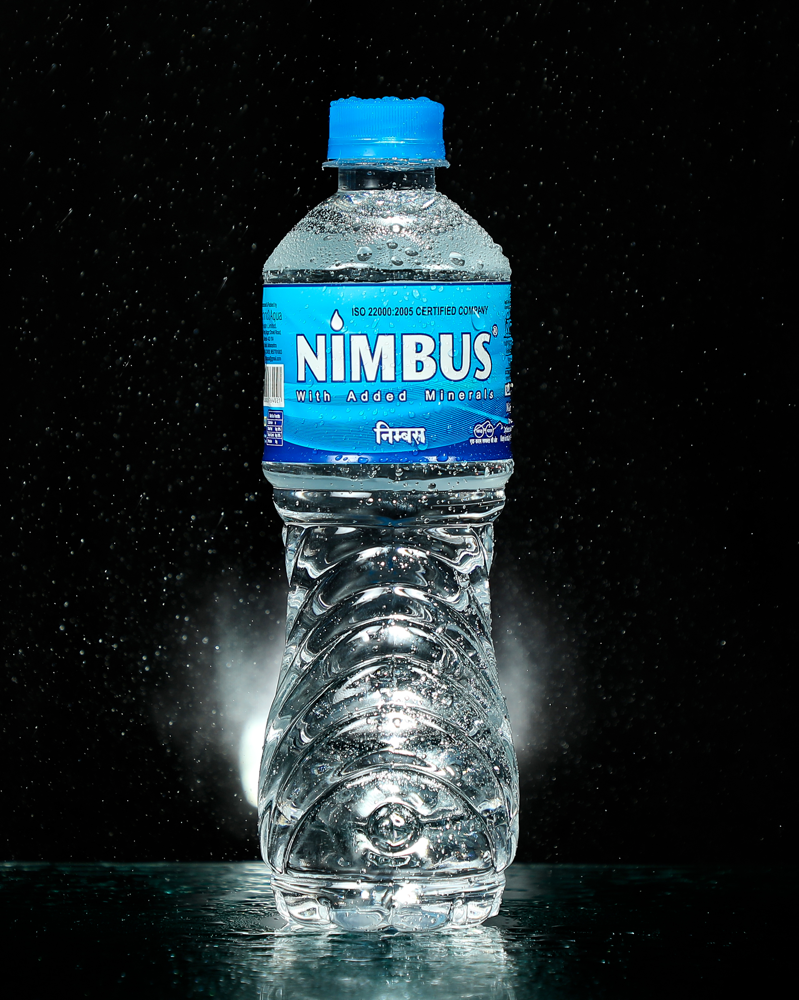
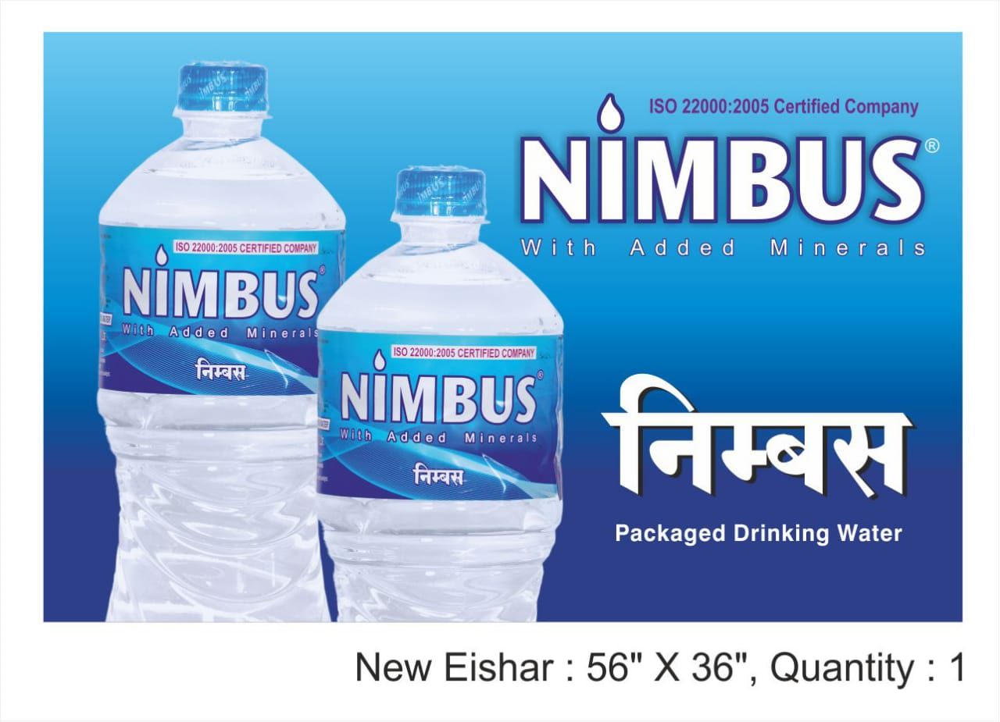
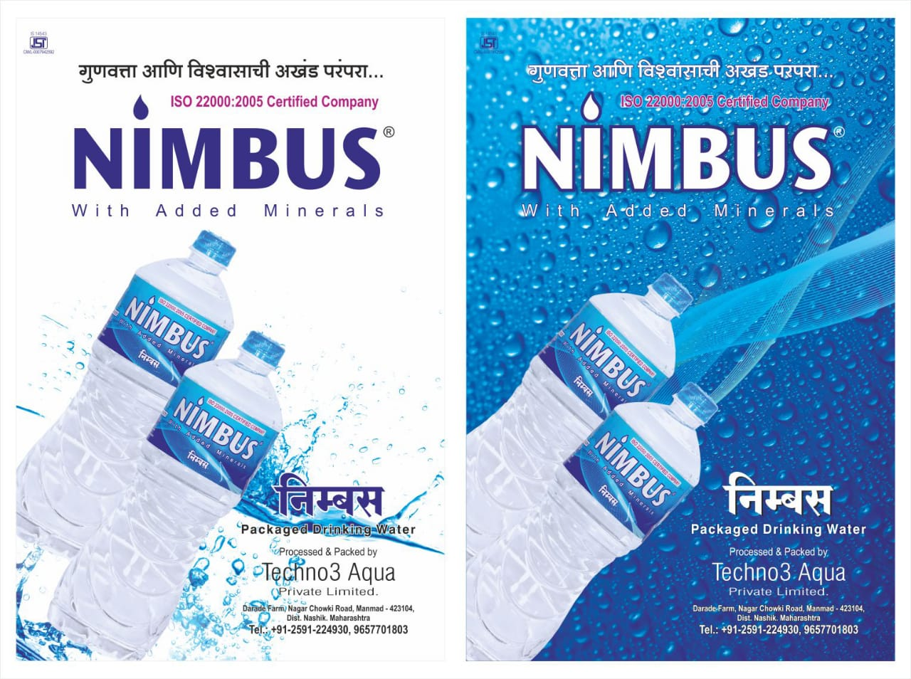
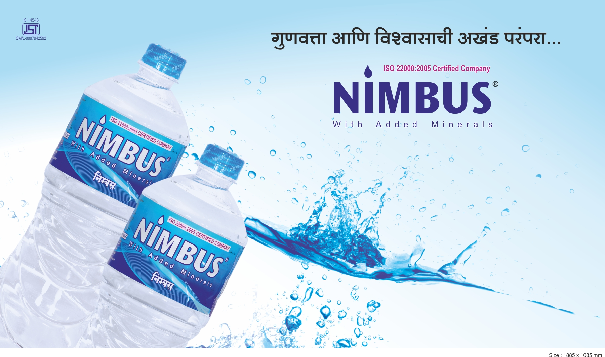

Packaged Drinking Water | Since 2009 | Nashik District, Maharashtra
Purity you can trust. Minerals your body needs.
Nimbus is a manufacturing-led packaged drinking water brand serving the region from Manmad, Dist. Nashik. We combine clean processing, disciplined quality control, and added minerals for everyday hydration.

Brand Promise
An unbroken tradition of quality and trust.
Packaged Drinking Water
With Added Minerals
निंबस
Manufactured In Maharashtra
ISO 22000
FSSAI
About Nimbus
A regional water brand built around clean processing, customer trust, and a journey since 2009.
Nimbus is the face of our packaged drinking water brand, while the manufacturing and processing backbone comes from Techno3 Aqua Pvt. Ltd. In the website, Nimbus remains the public brand, and the company details are shared transparently in this section.
Our focus is simple: deliver hygienically processed drinking water that is pleasant to drink, consistent in quality, and balanced with essential minerals for regular consumption.
Products
Three practical bottle sizes for travel, retail, and daily use.

Compact
A convenient size for events, travel counters, and quick refreshment.
Everyday
Balanced for retail shelves, offices, shops, and regular hydration on the move.
Longer Use
A larger serving for longer drives, workdays, hospitality, and family use.
Why Nimbus
Clean water is important. Balanced water is even better.
Untreated Water
Untreated water can carry microbial contamination, suspended particles, and inconsistency in taste and safety.
Typical Home Filter Output
Many filters focus on removal. Depending on the system, water may lose desirable mineral balance while being cleaned.
Nimbus Approach
Nimbus is processed for cleanliness and then presented as packaged drinking water with added minerals, aiming for a cleaner and more satisfying drinking experience.
Quality
A quality process that stays disciplined from batch to batch.
The source material repeatedly emphasizes one thing: quality is not an occasional check, it is a habit. Nimbus positions itself around regular monitoring, clean handling, and process consistency.
In-House Testing Mindset
Production is supported by routine quality checks so water consistency remains dependable.
Clean Handling
The manufacturing story highlights reduced contamination risk through controlled processing and filling discipline.
Customer Trust
Nimbus repeatedly frames customer satisfaction and health as the center of the brand promise.
Manufacturing
A manufacturing setup designed for hygiene, filtration, and controlled filling.

Multi-Stage Filtration
Source information mentions quartz filtration, carbon stages, softening, reverse osmosis, and fine filtration in a tightly managed process.
Hygiene-Focused Production
The brand material highlights routine cleaning, flushing, and maintenance so purity remains stable over time.
Added Minerals & Balanced Finish
Nimbus is presented not as plain filtered output, but as packaged drinking water with added minerals for a better drinking profile.
Gallery
Product, branding, and facility visuals from Nimbus.






Contact
Speak with Nimbus directly.
Call Now
9657701803For product enquiries, supply discussion, and direct communication.
Share your business enquiry or order-related requirement.
Address
Nimbus, Darade Farm, Nagarchowki Road, Manmad - 423104, Dist. Nashik, Maharashtra.
Chat on WhatsApp